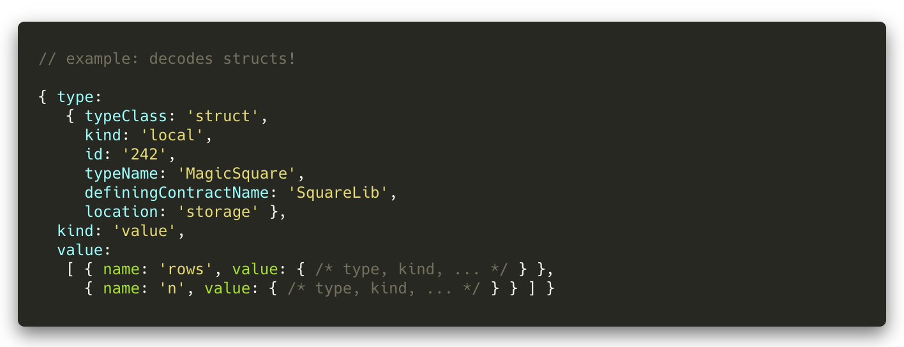

This module primarily defines TypeScript types for the output format
used in results provided by packages
@truffle/decoder@^4.0.0 and @truffle/codec@^0.1.0.
See below for complete listing or continue reading
Format information to learn about this format.
This format is intended for use in smart contract and dapp development
tools and libraries, and for use in display contexts, such as when
building on-screen components to show transaction and smart contract
state information.
This format seeks to provide an exhaustive schema for JavaScript
objects to encode lossless, machine-readable representations of
all possible Solidity and ABI data types and all possible values of those
types.
Objects in this format may be deeply nested and/or contain circular
dependencies. As such, do not serialize objects in this format or
otherwise attempt to display them in full without considering potential
risk. Objects in this format are for the machine to read, not humans!
This module provides utilities for inspecting objects in this format,
including the safeFormat.Utils.Inspect.ResultInspector wrapper
(for util.inspect),
and the unsafeFormat.Utils.Inspect.unsafeNativize function. For more
information, please see the documentation for those utilities.
Individual decoded values are represented by objects of the type
Format.Values.Result, which contain the following fields:
type: This is a Type object describing the value's
type. Each Type has a typeClass field describing the overall broad type,
such as "uint" or "bytes", together with additional information that gives
the specific type. For full detail, see Format.Types.
kind: This is either "value", in which case the Result is a
Value, or "error", in which case the Result is an
ErrorResult. In the former case, there will be
a value field containin the decoded value. In the latter case, there will be
an error field indicating what went wrong. Warning: When decoding a
complex type, such as an array, mapping, or array, getting a kind of "value"
does not necessarily mean the individual elements were decoded successfully.
Even if the Result for the array (mapping, struct) as a whole has kind
"value", the elements might still have kind "error".
value: As mentioned, this is included when kind is equal to "value".
It contains information about the actual decoded value. See
Format.Values for more information.
error: The alternative to value. Generally includes information about
the raw data that led to the error. See Format.Errors for
more information.
reference: This field is a debugger-only feature and does not
apply to results returned by @truffle/decoder, so it won't be documented here.
It's worth taking a moment here to answer the question: What counts as a value,
and what counts as an error?
In general, the answer is that anything that can be generated via Solidity
alone (i.e. no assembly), with correctly-encoded inputs, and without making use
of compiler bugs, is a value, not an error. That means that, for instance, the
following things are values, not errors:
A variable of contract type whose address does not actually hold a
contract of that type;
An external function pointer that does not correspond to a valid
function;
A string containing invalid UTF-8;
..., etc.
By contrast, the following are errors:
A bool which is neither false (0) nor true (1);
An enum which is out of range;
..., etc.
(You may be wondering about the enum case here, because if you go sufficiently
far back, to Solidity 0.4.4 or earlier, it was possible to generate
out-of-range enums without resorting to assembly or compiler bugs. However,
enums are only supported in full mode (see
Notes on decoding modes),
which only supports 0.4.12 and later, so
we consider out-of-range enums an error. There are also additional technical
reasons why supporting out-of-range enums as a value would be difficult.)
There are three special cases here that are likely worthy of note.
Firstly, internal function pointers currently can't be meaningfully
decoded via @truffle/decoder. However, they decode to a bare-bones value,
not an error, as it is (in a sense) our own fault that we can't decode
these, so it doesn't make sense to report an error, which would mean that
something is wrong with the encoded data itself. This value that it
decodes to will give the program counter values it corresponds to, but
will not include the function name or defining class, as @truffle/decoder
is not presently capable of that. For now, full decoding of internal
function pointers remains a debugger-only feature. (But limited support for
this via @truffle/decoder is planned for the future.)
(When using the debugger, an invalid internal function pointer will decode to an
error. However, when using @truffle/decoder, we have no way of discerning whether
the pointer is valid or not, so internal function pointers will always decode to
a value, if an uninformative one.)
Secondly, when decoding events, it is impossible to decode indexed parameters
of reference type. Thus, these decode to an error
(IndexedReferenceTypeError, which see) rather than to a value.
Thirdly, the decoder is currently limited when it comes to decoding state
variables that are declared constant, and not all such variables are yet
supported in decoding; attempting to decode one of these that is not currently
supported will yield an error.
Similarly, there are various things that decode to errors for technical reasons.
Objects with encoded length fields larger than what fits in a JavaScript safe
integer, or pointed to by pointers with values larger than what fits in a
JavaScript safe integer, will decode to errors, even if they may technically be
legal. Such cases are impractical to handle and should never come up in real
use so we decode them to errors. Errors may also be returned in case of an
error in attempting to read the data to be decoded.
Finally, except when decoding events, we do not return an error if the pointers
in an ABI-encoded array or tuple are arranged in a nonstandard way, or if
strings or bytestrings are incorrectly padded, because it is not worth the
trouble to detect these conditions.
Most of this doesn't have explanatory documentation
because it's largely self-explanatory, but particularly
non-obvious parts have been documented for clarity.
A note on optional fields: A number of types or values
have optional fields. These contain helpful
but non-essential information, or information which
for technical reasons we can't guarantee we can determine.
Codec Output Format
Module information
This module primarily defines TypeScript types for the output format used in results provided by packages
@truffle/decoder@^4.0.0and@truffle/codec@^0.1.0.See below for complete listing or continue reading Format information to learn about this format.
How to import
Import either as part of Codec or by itself:

Format information
This format is intended for use in smart contract and dapp development tools and libraries, and for use in display contexts, such as when building on-screen components to show transaction and smart contract state information.
This format seeks to provide an exhaustive schema for JavaScript objects to encode lossless, machine-readable representations of all possible Solidity and ABI data types and all possible values of those types.
This format targets types and values understood by the Solidity programming language and the Contract ABI specification, within the context of the Ethereum Virtual Machine (EVM) and in raw data for transactions and logs according to the Ethereum JSON RPC.
Objects in this format may be deeply nested and/or contain circular dependencies. As such, do not serialize objects in this format or otherwise attempt to display them in full without considering potential risk. Objects in this format are for the machine to read, not humans! This module provides utilities for inspecting objects in this format, including the safe Format.Utils.Inspect.ResultInspector wrapper (for util.inspect), and the unsafe Format.Utils.Inspect.unsafeNativize function. For more information, please see the documentation for those utilities.
Specification
Individual decoded values are represented by objects of the type Format.Values.Result, which contain the following fields:
type: This is aTypeobject describing the value's type. EachTypehas atypeClassfield describing the overall broad type, such as"uint"or"bytes", together with additional information that gives the specific type. For full detail, see Format.Types.kind: This is either"value", in which case theResultis aValue, or"error", in which case theResultis anErrorResult. In the former case, there will be avaluefield containin the decoded value. In the latter case, there will be anerrorfield indicating what went wrong. Warning: When decoding a complex type, such as an array, mapping, or array, getting a kind of"value"does not necessarily mean the individual elements were decoded successfully. Even if theResultfor the array (mapping, struct) as a whole has kind"value", the elements might still have kind"error".value: As mentioned, this is included whenkindis equal to"value". It contains information about the actual decoded value. SeeFormat.Valuesfor more information.error: The alternative tovalue. Generally includes information about the raw data that led to the error. SeeFormat.Errorsfor more information.reference: This field is a debugger-only feature and does not apply to results returned by @truffle/decoder, so it won't be documented here.Values vs. errors
It's worth taking a moment here to answer the question: What counts as a value, and what counts as an error?
In general, the answer is that anything that can be generated via Solidity alone (i.e. no assembly), with correctly-encoded inputs, and without making use of compiler bugs, is a value, not an error. That means that, for instance, the following things are values, not errors:
By contrast, the following are errors:
boolwhich is neitherfalse(0) nortrue(1);enumwhich is out of range;(You may be wondering about the enum case here, because if you go sufficiently far back, to Solidity 0.4.4 or earlier, it was possible to generate out-of-range enums without resorting to assembly or compiler bugs. However, enums are only supported in full mode (see Notes on decoding modes), which only supports 0.4.12 and later, so we consider out-of-range enums an error. There are also additional technical reasons why supporting out-of-range enums as a value would be difficult.)
There are three special cases here that are likely worthy of note.
Firstly, internal function pointers currently can't be meaningfully decoded via @truffle/decoder. However, they decode to a bare-bones value, not an error, as it is (in a sense) our own fault that we can't decode these, so it doesn't make sense to report an error, which would mean that something is wrong with the encoded data itself. This value that it decodes to will give the program counter values it corresponds to, but will not include the function name or defining class, as @truffle/decoder is not presently capable of that. For now, full decoding of internal function pointers remains a debugger-only feature. (But limited support for this via @truffle/decoder is planned for the future.)
(When using the debugger, an invalid internal function pointer will decode to an error. However, when using @truffle/decoder, we have no way of discerning whether the pointer is valid or not, so internal function pointers will always decode to a value, if an uninformative one.)
Secondly, when decoding events, it is impossible to decode indexed parameters of reference type. Thus, these decode to an error (
IndexedReferenceTypeError, which see) rather than to a value.Thirdly, the decoder is currently limited when it comes to decoding state variables that are declared constant, and not all such variables are yet supported in decoding; attempting to decode one of these that is not currently supported will yield an error.
Similarly, there are various things that decode to errors for technical reasons. Objects with encoded length fields larger than what fits in a JavaScript safe integer, or pointed to by pointers with values larger than what fits in a JavaScript safe integer, will decode to errors, even if they may technically be legal. Such cases are impractical to handle and should never come up in real use so we decode them to errors. Errors may also be returned in case of an error in attempting to read the data to be decoded.
Finally, except when decoding events, we do not return an error if the pointers in an ABI-encoded array or tuple are arranged in a nonstandard way, or if strings or bytestrings are incorrectly padded, because it is not worth the trouble to detect these conditions.
Notes on this documentation
Most of this doesn't have explanatory documentation because it's largely self-explanatory, but particularly non-obvious parts have been documented for clarity.
A note on optional fields: A number of types or values have optional fields. These contain helpful but non-essential information, or information which for technical reasons we can't guarantee we can determine.